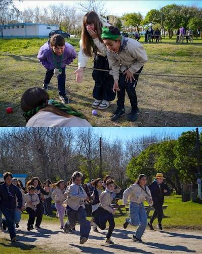
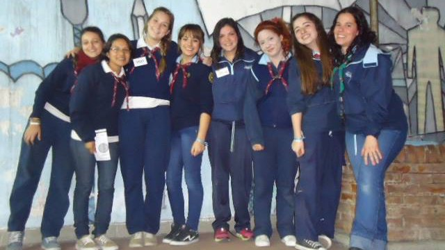

Como Guías Mayores, nuestra etapa pone el foco en la autonomía, el servicio comunitario y el desarrollo personal. En agosto participamos del Encuentro Regional en La Plata junto a chicas de distintos puntos de la provincia, un espacio pensado para debatir, compartir herramientas y proyectar acciones sociales conjuntas.
Durante todo el fin de semana trabajamos en talleres sobre liderazgo juvenil, perspectiva comunitaria y gestión de proyectos solidarios. Cada comunidad presentó lo que viene haciendo en su barrio durante el año, y nos llevamos ideas buenísimas para articular actividades entre los grupos de La Plata y Berisso.

Más allá de lo que aprendimos en cada charla, lo que más valoro es la red de amistad que se arma en el guidismo: saber que en cada ciudad hay otras jóvenes con las mismas ganas de construir espacios inclusivos, solidarios y comprometidos con su comunidad.